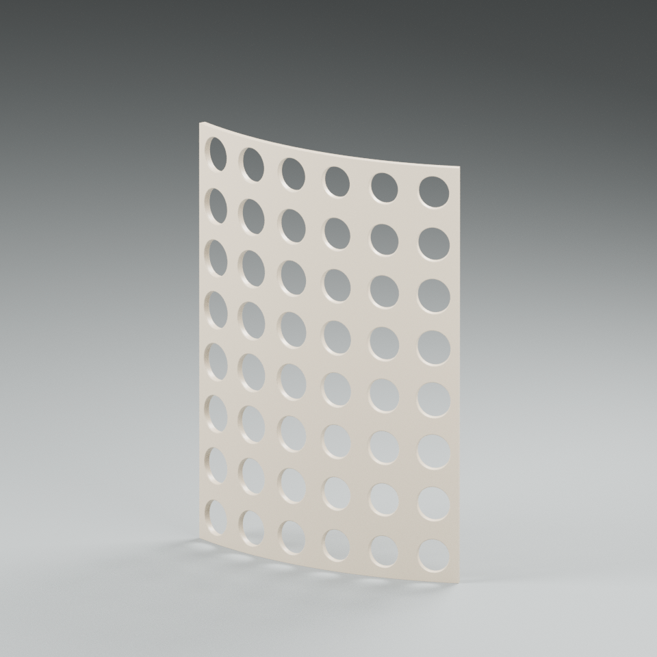
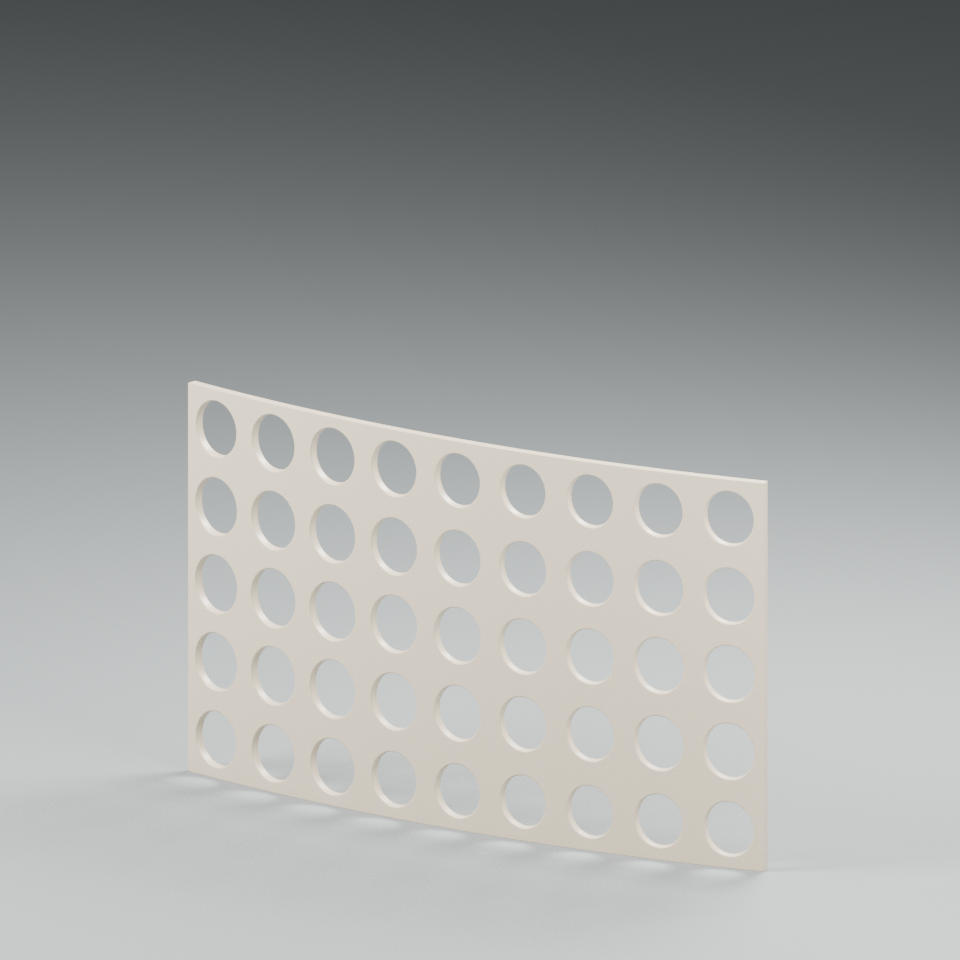
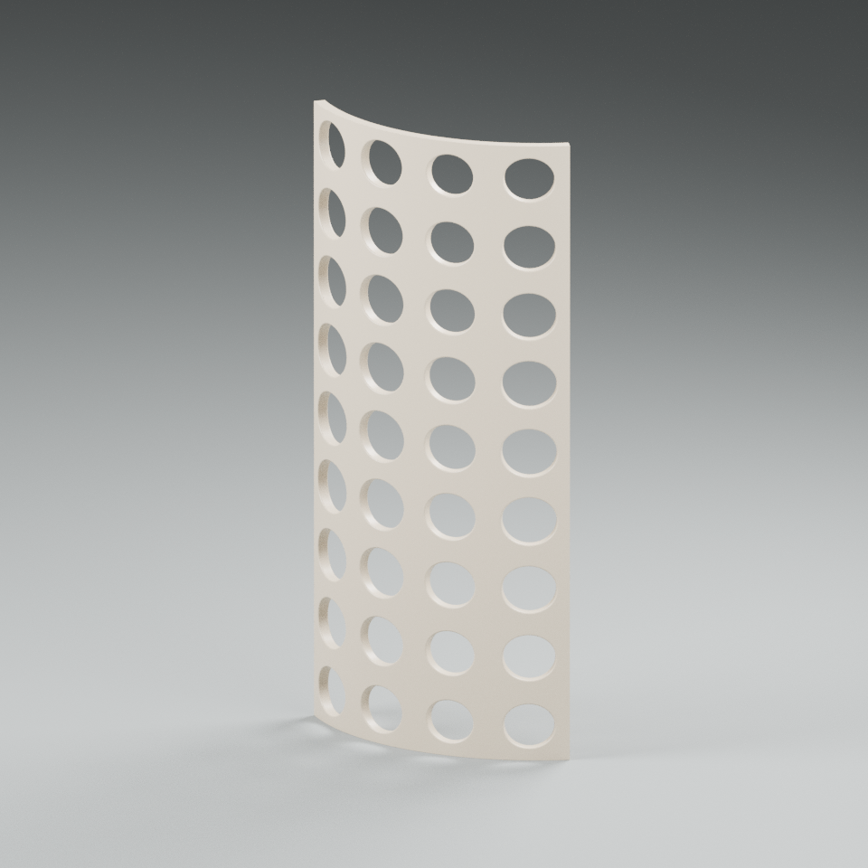

透幕 VEIL
01竖向、轻弧。先在正面观察疏密，再到侧面看孔道如何穿过实体。
在观察台中打开 ↗VEIL / PERFORATED CERAMIC
一面微弯的陶瓷，
在孔沿与背面之间，留下厚度。
先看真实渲染，再按需进入 3D。
三组形体使用同一尺度，不自动归一化。

02 / THREE PROPORTIONS
每组图像均指向该变体的实际渲染。
关闭 JavaScript，也可逐一查看与下载。
竖向、轻弧。先在正面观察疏密，再到侧面看孔道如何穿过实体。
在观察台中打开 ↗
宽低、浅弧。孔列横向延展，减少弯曲，让更长的边界留在画面里。
在观察台中打开 ↗
窄高、深弧。俯视比正面更直接地揭示弯曲；表面连续弯曲，并不以折线分段。
在观察台中打开 ↗03 / HOW TO READ
这是具有真实贯穿孔与厚度的数字陶瓷屏体，不是透明贴图。主视看整体，正面看孔列，俯视看弧度，孔沿近景看表面与孔道的衔接。实时模型读取原 GLB，不重建简化替身。
三个离散形体不是连续参数域的安全证明。数字陈列不证明实体自立、制造公差、载荷或透光性能；GPU 材质、动态闪烁、真实手机与触控表现未验。
渲染与模型的精确参数，以各组模型记录为准。若 3D 不可用，不更改浏览器安全设置，直接继续使用静态图与源文件。
查看制作与复现说明 →